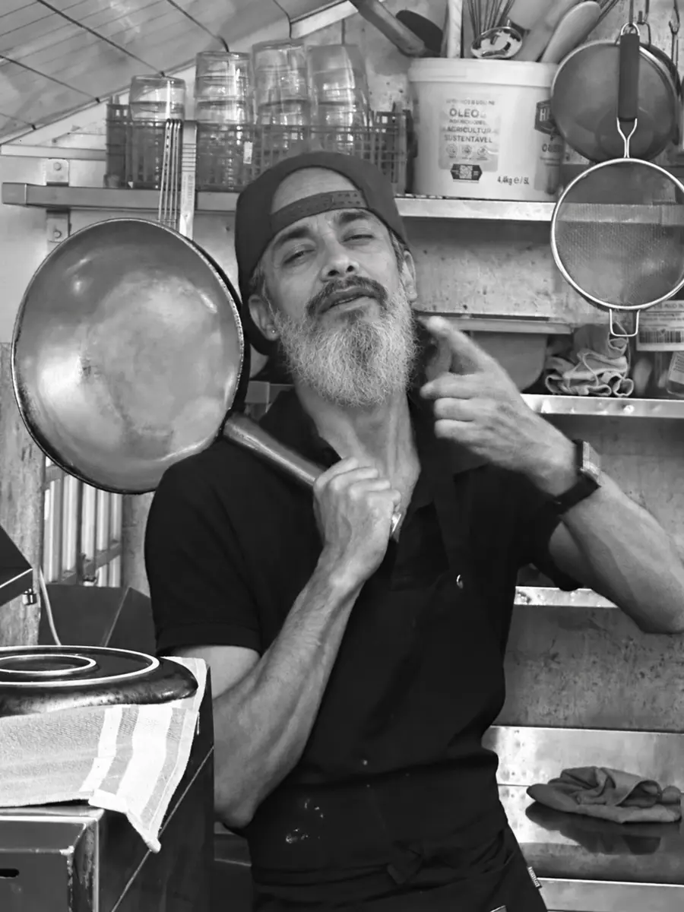

Saltar para o conteúdo
Santa Clara
dos Cogumelos
Menu
Início
Galeria
Cretinices
Equipa
Horário & Reservas
Santa Clara dos Cogumelos
Uma equipa jovem
Luigi: drums
Ana: vocals
Chandan: lead guitar
Sagar: bass
Sushil: guitar

Devendra: dancing
Leo: horns
Sabi: keyboards